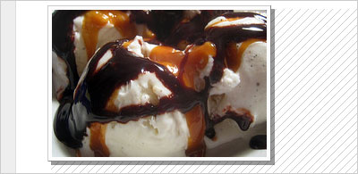

No web presence these days is complete without a little pixel lovin’ in the form of images. If you have a blog or website out there somewhere without a single image anywhere on the site, well… 1997 called. They said they’re sorry you fought and they want you to come back home.
Sometimes we need a little help to make our outstanding images truly stand out.
But sometimes just having images isn’t enough. Sometimes we need a little help to make our outstanding images truly stand out. And that’s where CSS can help. Here are five things you can do, using CSS, to make the most of your images.
The Wraparound Treatment
One of the easiest ways to add visual interest to your page (and your images at the same time) is to have your text wrap around your images. It’s very easy to do:
img.wrap {
float: right;
margin: 0 0 .5em 1em;
}
The “float” property causes the image to literally float to the right side of whatever container it’s in, and causes the rest of the content inside that container to wrap around it. Then we just added a bit of a margin to the bottom and left sides of the image to prevent the text from butting right up against its edges. And you’ll note we used a “wrap” class on this rule, meaning we can choose which images get this treatment. You can see this in action here.
The Photo Treatment
This option gives your image a bit of a white border around the edges, just like photos in real life often have. Try this:
img.photo {
border: 1px solid #999;
background-color: #fcfcfc;
padding: 4px;
}
You can see the results here. What we’ve done is added a gray border to all four sides, changed the background color of the image to a very pale gray (almost white), and then added a bit of padding to all four sides between the background and the image itself, so the background color could show through. And you’ll note we used a class of “photo” here: this way, we can pick and choose in our code which images get this treatment.
The Depth Treatment
We can also expand on the Photo treatment above and use the borders to create a sense of depth:
img.deep {
border-left: 1px solid #ccc;
border-top: 1px solid #ccc;
border-right: 1px solid #888;
border-bottom: 1px solid #888;
background-color: #fcfcfc;
padding: 4px;
}
As you can see above and on the example page, we’ve changed the border colors slightly. We’ve made the top and left borders a slightly lighter shade than the bottom and right borders. This creates a subtle illusion of depth: the lighter border on the top and left suggests light is hitting those sides and the darker border on the bottom and right suggests a hint of a shadow created by a three-dimensional object.
The Shadow Treatment
And to expand further on the Depth treatment, we can use a bit of CSS magic and slightly modified HTML to really make the photo jump up off the page. We’ll start with this HTML:
<div class="shadow"><img src="photo.jpg" /></div>
As you can see, we’ve wrapped our image in a div. Then we just apply these styles:
.shadow {
float: left;
background-color: #aaa;
}
.shadow img {
margin: -4px 4px 4px -4px;
display: block;
position: relative;
padding: 4px;
background-color: #fcfcfc;
border-left: 1px solid #ccc;
border-top: 1px solid #ccc;
border-right: 1px solid #888;
border-bottom: 1px solid #888;
}
Obviously, this is a more advanced technique than the previous options. We’re applying a background color to the div around our image, and then floating it so that it becomes the same size as the image inside. Then, we’re using negative margins to move our image up and to the left of where it was originally, setting a display of “block” and a position of “relative” to keep the floated div container from moving with our image. The result is that a few pixels of our background color are visible in the bottom right, creating the illusion of a shadow. Of course, as you can see by the example, it isn’t a true shadow: nothing shows through.
The Shadow Treatment, Part Two
If you want your shadow to behave like a real shadow, you’ll need to make use of a transparent PNG image. Image editing is beyond the scope of this article (and as you can probably tell from the site, this author), but if you create a semi-transparent square of black (I used 40% opacity) and save it as a PNG, then you can just replace this line:
background-color: #aaa;
With one like this:
background-image: url(shadow.png);
And the result is a transparent shadow effect! On browsers whose initials don’t spell IE6, anyway. As usual, IE is a party pooper: it doesn’t support transparency in images. But the result is a non-transparent shadow, no worse than what we had in the previous example.
The depth treatment can be simplified by using “inset” or “outset” as border attributes. Saves you three lines of typing.
Your example would then read:
img.deep {
background-color:#fcfcfc;
padding:4px;
border:1px solid #ccc outset;
}
Important when using inset or outset: Always choose a relatively light (i.e. non-black) border color, or the effect may not show in some browsers.
Pingback: 12 Creative and Cool Uses for the CSS Border Property
Don’t forget that you can also use these on your divs to make them stand out more as well. I often will create a section standout via the shadow transparency. This also works good for navigation ul’s to shadow them makes the layer stand out better IMHO.
Pingback: Miscellaneous Musings » 5 CSSriffic Treatments to Make Your Images Stand Out
Pretty cool, using it on my site, thanks.
Pingback: 이미지 CSS 11가지 « [iluku] Coding Library